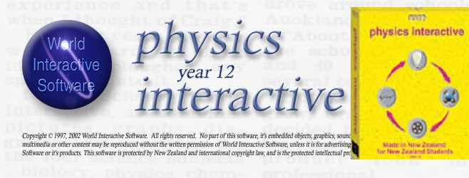

Research Outputs and Publications
A 35-year research record running from molecular microbiology to low-cost science instrumentation and education research. Michael Fenton is a professional member of the Royal Society of New Zealand (MRSNZ), with competence to undertake independent research practice. The body of work below is permanently archived on Zenodo with citable DOIs, and underpins an emerging theoretical framework, Design by Subversion.
Much of this work has been done as an independent researcher, with results archived openly on Zenodo with permanent DOIs rather than held behind an affiliation. A constant thread is creating and protecting the spaces where authentic STEM learning can happen, whether physical, pedagogical, or curriculum and qualification space.
A contemporary rationale runs through the instrumentation strand of this work. As generative AI is trained on a scientific literature increasingly polluted by fabricated paper mill studies (Richardson and Amaral, 2025, Proceedings of the National Academy of Sciences), simulated data can no longer be assumed to reflect physical reality. Low-cost instruments that let learners gather their own first-hand, provenance-transparent data are, on this argument, becoming epistemically necessary rather than merely affordable. The point cuts the other way too: once free tools and ultra low-cost open-source sensors remove the equipment barrier, cost can no longer justify simulating, and simulation must be defended on other grounds.
Research interests
Current and emerging lines of inquiry:
- Constraint-driven design for equitable STEM access, formalised in a working framework, Design by Subversion. This is current work, archived as a technical note and not yet formally peer-reviewed.
- Educational data acquisition systems and sensor instrumentation, including ultra low-cost and browser-based instruments.
- Epistemic functions of hands-on measurement in the post-AI era, including the implications of an AI-contaminated scientific literature for science education.
- Practice-embedded research methodology.
- Teacher professional learning and systemic barrier analysis.
Research outputs archived on Zenodo
A curated set of outputs deposited on Zenodo with permanent DOIs, spanning 1994 to 2026 and connecting each output to the wider body of work. These records range from foundational microbiology and the founding of the Nexus Research Group to the most recent low-cost instrumentation discoveries.
- Fenton, M. (2026). Casio Graphing Calculator Serial Interface: Priority Disclosure of Timing Discoveries, Encoding Invention, and Operational Modes (FX-9750 and FX-9860 Series). Zenodo. https://doi.org/10.5281/zenodo.19303911
- Fenton, M. (2026). RIGEL-WEB: The Real-World Interactive Games and Electronics Link as a Self-Contained HTML Sensor Interface Invented by Subverting Web Browser Architecture for Authentic STEM Learning. Zenodo. https://doi.org/10.5281/zenodo.20541487
- Fenton, M. (2026). SMART: The Sound-to-Motion Analysis and Recording Tool, a Self-Contained HTML Science Instrument Invented by Subverting Web Browser Audio Architecture for Authentic STEM Learning. Zenodo. https://doi.org/10.5281/zenodo.20542011
- Fenton, M. (2026). RIGEL - Real-World Interactive Games and Electronics Link: A Universal Sensor Interface Invented by Subverting Game Design Software for Authentic STEM Learning. Zenodo. https://doi.org/10.5281/zenodo.19508521
- Fenton, M., & Fenton, C. (2026). Design materials for distance-delivered science and mathematics teacher professional development: Open Polytechnic qualifications (2011-2019). Zenodo. https://doi.org/10.5281/zenodo.20078593
- Fenton, M. (2026). Skill Standards: Navigating Old Narrative Traps - A Briefing Note for Instructional Designers in New Zealand Vocational Education and Training. Zenodo. https://doi.org/10.5281/zenodo.20337481
- Fenton, M. (2025). Rediscovering the 3-Pin Port: A Novel RECEIVE() Protocol Discovery Enabling Low-Cost Classroom Data Logging on Casio FX-9750 and FX-9860 Series Calculators. Zenodo. https://doi.org/10.5281/zenodo.19281514
- Fenton, M. (2024). The B9 Robot Mobile Laboratory: A Low-Cost AI-Enabled Science Communication and STEM Engagement Tool for New Zealand Classrooms. Zenodo. https://doi.org/10.5281/zenodo.19528980
- Fenton, M. (2011). Using a Digital Multi-meter as an Inexpensive Data Logger Substitute. Zenodo. https://doi.org/10.5281/zenodo.19325413
- Fenton, M. (2009, May 26). RIGEL - Learning From Life: Communities of Learning via a Connected Curriculum. Microsoft Partners in Learning Regional Innovative Teachers Conference, Kuala Lumpur. Zenodo. https://doi.org/10.5281/zenodo.19334228
- Fenton, M. (2008). Authentic Learning Using Mobile Sensor Technology With Reflections on the State of Science Education in New Zealand. Zenodo. https://doi.org/10.5281/zenodo.19302276
- Fenton, M., & Fenton, C. (2004). Space Pioneer: William H Pickering, Rocket Man. Zenodo. https://doi.org/10.5281/zenodo.19346544
- Fenton, M., & Fenton, C. (2003). DNA and Genetic Engineering: Practical Protocols for School Science, Including an Original Human Cheek Cell DNA Extraction Method. Zenodo. https://doi.org/10.5281/zenodo.19347896
- Fenton, C. D., & Fenton, M. (1999). Nexus (Nexus Research Group). Zenodo. https://doi.org/10.5281/zenodo.19365952
- Fenton, M., Brown, T. J., Clarke, J. M., Ionas, G., Kelly, P., & Pickering, M. (1994). Giardia and giardiasis in New Zealand. In Giardia: From molecules to disease (pp. 124-125). Zenodo. https://doi.org/10.5281/zenodo.19423966
Scholarly activity across three career phases
This demonstrates sustained scholarly contribution across three distinct career phases:
- Microbiology Research (1991–1994): Peer-reviewed international journal publications in soil microbiology and symbiotic bacteria.
- Classroom Teaching Innovation (1999–2018): Extensive peer-reviewed conference presentations and professional journal publications in STEM education pedagogy.
- Teacher Education Leadership (2011–2018): Major curriculum development for tertiary STEM teacher education programs at a national level.
The body of work shows consistent engagement with peer review processes, recognition through competitive fellowships and national awards, and sustained impact on teaching and assessment practice at primary, secondary, and tertiary levels across all STEM disciplines.
Peer-Reviewed Research Journal Publications
Fenton, M., & Jarvis, B. D. W. (1991). Plasmid transfer in soil/plant environments. New Zealand Microbiological Society Newsletter, August.
Jarvis, B. D. W., & Fenton, M. (1994). Expression of the symbiotic plasmid from Rhizobium leguminosarum biovar trifolii in Sphingobacterium multivorum. Canadian Journal of Microbiology, 40, 873–879.
Rao, J. R., Fenton, M., & Jarvis, B. D. W. (1994). Symbiotic plasmid transfer in Rhizobium leguminosarum biovar trifolii and competition between the inoculant strain ICMP2163 and transconjugant soil bacteria. Soil Biology and Biochemistry, 26, 339–351.
Brown, T. J., Kelly, P. J., Ionas, G., Clarke, J. M., Fenton, M., & Pickering, M. (1994). Giardia and giardiasis in New Zealand. In R. C. A. Thompson, J. A. Reynoldson, & A. J. Lymbery (Eds.), Giardia: From molecules to disease (pp. 124–125). CAB International.
Jarvis, B. D. W., & Tighe, S. W. (1994). Rapid identification of Rhizobium species based on cellular fatty acid analysis. Plant and Soil, 161(2), 289–298.
Peer-Reviewed Government / Council Research Reports
Fenton, M. (2008). Authentic learning using mobile sensor technology with reflections on the state of science education in New Zealand [E-Learning Fellowship research report]. CORE Education Ltd. Ministry of Education. Link to report, RIGEL project and Casio-picaxe data logger
Fenton, M. (2008). Pedagogy and student involvement. In Energy conservation and renewable energy generation (EnviroPower) pilot – Completion report. Venture Taranaki Trust. Link to report.
Peer-Reviewed Conference Proceedings (Full Papers)
Fenton, M., & Fenton, C. (2016). Teachers' experiences of professional development in science and mathematics by distance learning. In Proceedings of the ULearn 2016 Conference. Rotorua, New Zealand.
Fenton, M. (2009). RIGEL - Learning from life: Communities of learning via a connected curriculum. In Proceedings of the Microsoft Partners in Learning Regional Innovative Teachers Conference. Kuala Lumpur, Malaysia.
Fenton, M. (2008). Interactive eLearning tools for mathematics, science and robotics: The RIGEL project. In Proceedings of the ULearn 2008 Conference. Christchurch, New Zealand.
Bishop, R., Ryan, C., Durdle, B., Fenton, C., & Fenton, M. (2006). An integrated monitoring, control and biochemical system to reduce the reliance of biological filtration in recirculation seawater aquaculture systems. In Proceedings of the World Aquaculture Society, Aqua 2006.
Fenton, C. D., Fenton, M., & Raynes, A. (2001). Microbiology misconceptions in secondary schools. In Proceedings of the New Zealand Microbiological Society Conference. Wellington, New Zealand.
Fenton, M., & Fenton, C. D. (1999). Light photomicroscopy using an internet webcam digital camera. In Proceedings of the New Zealand Microbiological Society Conference. Dunedin, New Zealand.
Peer-Reviewed Conference Proceedings (Workshop Papers)
Fenton, M. (2018). Beyond fair tests – Other investigation strategies to engage reluctant learners. In Proceedings of the New Zealand Association of Science Educators SciCon Conference. Christchurch, New Zealand.
Fenton, M. (2018). Inspiring tomorrow's scientists: Doing science through the digital technologies curriculum. In Proceedings of the New Zealand Association of Science Educators SciCon Conference. Christchurch, New Zealand.
Fenton, M. (2017). The digital technology curriculum: Inspiring the coders of tomorrow or yesterday? In Proceedings of the ULearn2017 Conference. Hamilton, New Zealand.
Fenton, M. (2017). Gamification and digital technologies for effective mathematics teaching. In Proceedings of the ULearn2017 Conference. Hamilton, New Zealand.
Fenton, M. (2017). Reclaiming the maker space for effective science teaching. In Proceedings of the ULearn2017 Conference. Hamilton, New Zealand.
Fenton, M. (2015). Primary mathematics teaching online: Rich tasks for cross-curricula learning. In Proceedings of the New Zealand Association of Mathematics Teachers Conference. Auckland, New Zealand.
Fenton, M. (2013). Students leading learning in science and mathematics at home or school: New uses for multimeters. In Proceedings of the ULearn13 Conference. Hamilton, New Zealand.
Winter, M., Anderson, D., Fenton, M., & Glasson, B. (2010). Supporting the primary science teacher fellows – Transforming primary science. In Proceedings of the New Zealand Association of Science Educators SciCon 2010 Conference. Nelson, New Zealand.
Fenton, M. (2007). Interactive ICT tools for mathematics, science and robotics – Getting the most from Game Maker. In Proceedings of the New Zealand Association of Mathematics Teachers Conference. Auckland, New Zealand.
Broad, J., & Fenton, M. (2001). Education under the microscope. In Proceedings of the New Zealand Microbiological Society Conference. Wellington, New Zealand.
Professional Journal Articles (Peer-Reviewed)
Fenton, M. (2011). Using a digital multi-meter as an inexpensive data-logger substitute. SCIOS, Science Teachers Association of Western Australia.
Fenton, M. (2010). Digital and dirty in maths and science. INTERFACE, 22.
Fenton, M. (2009). Teaching and the F-word: Fun. INTERFACE, 19(761).
Fenton, M. (2004). Bill Pickering, rocket scientist. The New Zealand Science Teachers Journal, Term 1.
Fenton, M., & Fenton, C. D. (2003). DNA and genetic engineering. The New Zealand Science Teachers Journal, 103.
Higher Degree by Research
Fenton, M. (1994). The expression in soil bacteria of the symbiotic genes from Rhizobium leguminosarum biovar trifolii [Master's thesis, Massey University]. Massey University Research Repository.
Invited Keynote Addresses
Fenton, M. (2016, July). From Galileo to LIGO: Reclaiming the maker space for science [Keynote address]. SciCon2016 Conference, Lower Hutt, New Zealand.
Fenton, M. (2014, July). Enlightenment and education: A journey through time and space [Keynote address]. Open Polytechnic Learning Conference, Wellington, New Zealand.
Major Curriculum Development and Educational Resources
Tertiary-Level Course Development (Lead Author/Designer)
Level 4 New Zealand Certificate in Electrical Trade – General Electrical. (2023-2025). EarnLearn.
New Zealand Board for Engineering Diplomas Assessment and Moderation Online Training Package. (2016).
Level 7 Graduate Diploma in Primary Mathematics Teaching. (2014–2016). The Open Polytechnic of New Zealand.
Level 7 Graduate Diploma in Primary Science Teaching. (2011–2012). The Open Polytechnic of New Zealand.
Level 5 Diploma in Information & Computer Technology. (2005). Western Institute of Technology at Taranaki.
Secondary-Level Course Development (Lead Author)
NZQA New Zealand Certificate in Study and Employment Pathways (Levels 3 and 4, 2022). Physical Sciences III and Physical Sciences IV.
NCEA Levels 1–3 course content and assessment materials. (2006–2010). Science, Physics, Calculus, Applied Mathematics, Biology, Chemistry, Games Design, Robotics/Coding.
Level 2 NCEA Physics Interactive CD-ROM. (2002). World Interactive Software, distributed by Roadshow Entertainment (NZ) Ltd.
Professional Memberships and Leadership Roles
Royal Society of New Zealand Professional member (MRSNZ); Current
Competence to undertake independent research practice.
Director, Focus Consultancy; 2016–Present
Education consultancy providing leadership, assessment design and moderation services to education providers, including curriculum design, quality assurance processes, and professional development for science and mathematics teachers throughout New Zealand.
Programme Leader (Science & Mathematics Teaching), Lecturer, Writer Open Polytechnic; 2011–2018
'Doing science to teach science" (and sister courses in mathematics). Practical hands-on pedagogy and resources to raise teacher confidence and knowledge of science and mathematics. Mentored and supervised in-service classroom teachers and principals to design, carry out and evaluate practice-led action research projects that have improved children’s’ learning outcomes throughout New Zealand. Former teacher students have secured leadership roles, Fellowships and a Prime Minister's Science Teacher prize.
Hutt Valley Primary Science Education Network (2012-2018) STEM Education expert and Workshop Facilitator, Programme Leader, Open Polytechnic
Launched by the Minister of Education, Hon. Hekia Perata. The PSEN includes local schools, industries and science organisations (e.g. GNS), organising annual events and providing expert-led workshops.
Royal Society of New Zealand Science Teaching Leadership Programme – Workshop Facilitator / Designer/ Teacher mentor
Mentor to teachers and principals implementing curriculum and assessment change as part of leadership awards.
Founder/Director, Nexus Research Group; 1997-2004, voluntary.
Established the Nexus Research Group, patron Dr Sir William Pickering, former head of JPL. New Zealand’s (and likely unique in the southern hemisphere) only school-based research laboratory. School students worked as technicians and researchers, with access to scientists world-wide, sharing original discoveries at conferences and on the NRG website.
Awards and Fellowships
2017 – Kiwibank New Zealander of the Year – Local Hero Medal (services to science education)
2015 – New Zealand Prime Minister's Education Excellence Award finalist (Excellence in Leading)
2014 – DEANZ Excellence Award for Excellence in E-Learning, Distance Education Association of New Zealand (now FLANZ), for contribution to e-learning in New Zealand
2008 – New Zealand Ministry of Education E-Learning Fellow: E-learning Fellowship launch | 2007 Press release
2008 – Microsoft New Zealand Partners in Learning Innovative Teacher
1991 – New Zealand Microbiology Society Postgraduate Prize
